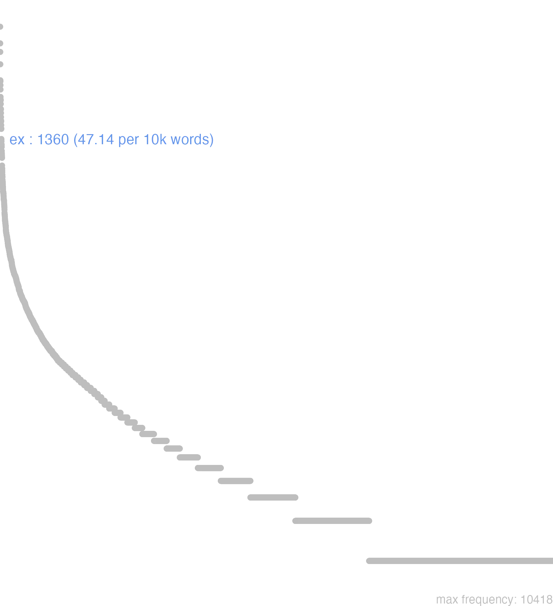

55 ex
55.0.0.1 bases lexicais
id: http://lila-erc.eu/data/id/lemma/101716
classe: preposição
paradigma: indeclinável
outras grafias: e, ec, ee, exs
variantes do lema:
no data
ē
no data
55.0.0.2 dicionários tradicionais
ec
arc. por ex. XII T. apud Cíc. Leg. 3, 9.
ex
ē
ec
prep. e prevérbio
Obs.: I - Como prevérbio ex: 1 É constante antes de vogal e de consoantes: examinare, extollere. 2 Toma a forma ec antes de f: ecferre = efferre, com assimilação do c e do prevérbio. 3 Toma a forma e antes de b, d, g, l, m, n, r, «i» consoante e «u» consoante: egredi, eligere, emittere. 4 Subsiste antes de s, c, qu: exsequi, excutere, exquirere. 5 e ou ex. antes de p: expers. II - Na composição ex designa: 1 Ideia de saída exire, sair de, algumas vezes com ideia acéssória de baixo para cima: extollere, elevar, levantar. 2 Ideia de ausência, privação: expers, que não tem parte em, falto de. 3 Ideia de acabamento: ebihere, beber até o fim, esvaziar. Neste emprego a força do provérbio é, muitas vezes, enfraquecida e o composto tem o mesmo sentido que o simples: vincio e evincio, cingir, ligar, atar. 4 Serve para reforçar formas adverbiais: exadversus adv., «defronte de, em frente a». Como preposição, o emprego de ex obedece as mesmas regras enumeradas para o emprego de ex prevérbio, sendo porém, de se notar que são estas menos estritas, sendo a forma ex a preferida na língua falada e e de uso corrente na língua escrita.
arc. por ex. XII T. apud Cíc. Leg. 3, 9.
ex
ē
ec
prep. e prevérbio
Obs.: I - Como prevérbio ex: 1 É constante antes de vogal e de consoantes: examinare, extollere. 2 Toma a forma ec antes de f: ecferre = efferre, com assimilação do c e do prevérbio. 3 Toma a forma e antes de b, d, g, l, m, n, r, «i» consoante e «u» consoante: egredi, eligere, emittere. 4 Subsiste antes de s, c, qu: exsequi, excutere, exquirere. 5 e ou ex. antes de p: expers. II - Na composição ex designa: 1 Ideia de saída exire, sair de, algumas vezes com ideia acéssória de baixo para cima: extollere, elevar, levantar. 2 Ideia de ausência, privação: expers, que não tem parte em, falto de. 3 Ideia de acabamento: ebihere, beber até o fim, esvaziar. Neste emprego a força do provérbio é, muitas vezes, enfraquecida e o composto tem o mesmo sentido que o simples: vincio e evincio, cingir, ligar, atar. 4 Serve para reforçar formas adverbiais: exadversus adv., «defronte de, em frente a». Como preposição, o emprego de ex obedece as mesmas regras enumeradas para o emprego de ex prevérbio, sendo porém, de se notar que são estas menos estritas, sendo a forma ex a preferida na língua falada e e de uso corrente na língua escrita.
1 Indica ponto de partida sent. local: Do interior de, de com ideia de movimento de dentro para fora.
2 Indica ponto de partida sent. local: De, procedente de ideia de origem Cés. B. Gal. 5, 13, 1.
3 Indica ponto de partida sent. local: Da parte de, de entre, do número de, entre ideia partitiva Cíc. De Or. 2, 357.
4 Daí: De, desde, a partir de sent. temporal Cíc. Rep. 1, 25.
5 Daí: Em seguida a, logo depois de Cíc. Br. 318.
6 Daí: Em virtude de, por causa de, por sent. causal Cíc. Of. 3, 99.
7 Daí: Conforme, segundo Cíc. Clu. 177.
8 Daí: De, feito de indicando a matéria de que uma coisa é feita Cíc. Verr. 2, 50.
9 II-Em locuções:
[EXEMPLOS]
1
Com verbos que significam sair, expulsar, tirar, como: exire sair de, deducere levar, retirar, auferre retirar, tollere, etc. Cés. B. Gal. 4, 30, 3.
9
ex lege Cíc. Clu. 103 «conforme a lei, legalmente»; ex consuetudine Cíc. Clu. 38 «segundo o costume»; ex itinere Cíc. Fam. 3, 9, 1 «pelo caminho, no caminho»; ex eo Tác. An. 12, 7 «a partir deste momento»; ex insidiis Cíc. Of. 2, 26 «à traição».
2 ē
prepos.
v. ex.
no data
E
prepos. de ablat.
prep. de ablat.
prepos. de ablat.
1 Cic. da, das, de, do, dos.
Exprep. de ablat.
1 Cic. da, das, de, des, do, dos, desde, depois, de dentro, em, por.
E
Praep.
Praepos.
In compositione, si sequatur f, mutatur x in f, ut: Effero, quod in supino Elatum abjicitur: aliquandò sequens s extèritur: Exero, Exolvo, & c.
Praep.
1 de
[EXEMPLOS]
1
e contrario, uel e diuerso pelo contrario
e regione defronte
Praepos.
In compositione, si sequatur f, mutatur x in f, ut: Effero, quod in supino Elatum abjicitur: aliquandò sequens s extèritur: Exero, Exolvo, & c.
1 de, ou depois
2 aliquando pro Propter
[EXEMPLOS]
1
ex illo depois daquelle tempo
ex quo depois que
2
ex amore;
ex metu
X
ex aequo i, aequaliter
ex aequo, & bono iudicare julgar com igualdade, brandura, e benignidade
ex animi sententia res accidit succedeo como se desejava
ex animo i, non ficté
ex composito de cuidado, de proposito, de industria
ex consuetudine segundo o costume
ex dignitate como pede a dignidade
ex fide i, fideliter
ex inopinato sem se esperar, ou cuidar i, ex insperato
E
praepositio.
praepositio.
praepositio.
1 de
[EXEMPLOS]
1
e coelo cedidit Cato
praepositio.
1 de
[EXEMPLOS]
1
ex urbe Da cidade
55.0.0.3 dados de corpus
![This chart plots collocate by scoreSUBST, for the headword ex here are all the values plotted: collocate: is; scoreSUBST: 0. collocate: qui; scoreSUBST: 0. collocate: urbs; scoreSUBST: 3. collocate: omnis; scoreSUBST: 0. collocate: hic; scoreSUBST: 0. collocate: unus; scoreSUBST: 0. collocate: pars; scoreSUBST: 3. collocate: aliquis; scoreSUBST: 0. collocate: ille; scoreSUBST: 0. collocate: senatus; scoreSUBST: 2. collocate: castra; scoreSUBST: 2. collocate: locus; scoreSUBST: 2. collocate: alius; scoreSUBST: 0. collocate: sui; scoreSUBST: 0. collocate: ager; scoreSUBST: 2. collocate: tuus; scoreSUBST: 0. collocate: iter; scoreSUBST: 2. collocate: manus; scoreSUBST: 2. collocate: uita; scoreSUBST: 2. collocate: fuga; scoreSUBST: 2. collocate: littera; scoreSUBST: 2. collocate: oppidum; scoreSUBST: 2. collocate: captiuus; scoreSUBST: 3. collocate: Sicilia; scoreSUBST: 0. collocate: exeo; scoreSUBST: 0. collocate: prouincia; scoreSUBST: 2. collocate: praeceptum; scoreSUBST: 2. collocate: primum; scoreSUBST: 0. collocate: contrarium; scoreSUBST: 2. collocate: Italia; scoreSUBST: 0. collocate: altum; scoreSUBST: 2. collocate: Britannia; scoreSUBST: 0. collocate: pompeianus; scoreSUBST: 0. collocate: gemma; scoreSUBST: 2. collocate: portus; scoreSUBST: 2. collocate: inopia; scoreSUBST: 2. collocate: interuallum; scoreSUBST: 2. collocate: sinus; scoreSUBST: 2. collocate: conspectus; scoreSUBST: 2. collocate: egredior; scoreSUBST: 0. collocate: pauci; scoreSUBST: 2. collocate: aurum; scoreSUBST: 2. collocate: frumentum; scoreSUBST: 2. collocate: complures; scoreSUBST: 0. collocate: inferus; scoreSUBST: 0. collocate: equus; scoreSUBST: 2. collocate: Asia; scoreSUBST: 0. collocate: calamitas; scoreSUBST: 2](./Media/wordcloud__xx101-120xx__BY_collocate_scoreSUBST.webp)
![This chart plots collocate by scoreADJ, for the headword ex here are all the values plotted: collocate: is; scoreADJ: 0. collocate: qui; scoreADJ: 0. collocate: urbs; scoreADJ: 0. collocate: omnis; scoreADJ: 0. collocate: hic; scoreADJ: 0. collocate: unus; scoreADJ: 0. collocate: pars; scoreADJ: 0. collocate: aliquis; scoreADJ: 0. collocate: ille; scoreADJ: 0. collocate: senatus; scoreADJ: 0. collocate: castra; scoreADJ: 0. collocate: locus; scoreADJ: 0. collocate: alius; scoreADJ: 0. collocate: sui; scoreADJ: 0. collocate: ager; scoreADJ: 0. collocate: tuus; scoreADJ: 0. collocate: iter; scoreADJ: 0. collocate: manus; scoreADJ: 0. collocate: uita; scoreADJ: 0. collocate: fuga; scoreADJ: 0. collocate: littera; scoreADJ: 0. collocate: oppidum; scoreADJ: 0. collocate: captiuus; scoreADJ: 0. collocate: Sicilia; scoreADJ: 0. collocate: exeo; scoreADJ: 0. collocate: prouincia; scoreADJ: 0. collocate: praeceptum; scoreADJ: 0. collocate: primum; scoreADJ: 0. collocate: contrarium; scoreADJ: 0. collocate: Italia; scoreADJ: 0. collocate: altum; scoreADJ: 0. collocate: Britannia; scoreADJ: 0. collocate: pompeianus; scoreADJ: 2. collocate: gemma; scoreADJ: 0. collocate: portus; scoreADJ: 0. collocate: inopia; scoreADJ: 0. collocate: interuallum; scoreADJ: 0. collocate: sinus; scoreADJ: 0. collocate: conspectus; scoreADJ: 0. collocate: egredior; scoreADJ: 0. collocate: pauci; scoreADJ: 0. collocate: aurum; scoreADJ: 0. collocate: frumentum; scoreADJ: 0. collocate: complures; scoreADJ: 0. collocate: inferus; scoreADJ: 2. collocate: equus; scoreADJ: 0. collocate: Asia; scoreADJ: 0. collocate: calamitas; scoreADJ: 0](./Media/wordcloud__xx101-120xx__BY_collocate_scoreADJ.webp)
![This chart plots collocate by scoreVERBO, for the headword ex here are all the values plotted: collocate: is; scoreVERBO: 0. collocate: qui; scoreVERBO: 0. collocate: urbs; scoreVERBO: 0. collocate: omnis; scoreVERBO: 0. collocate: hic; scoreVERBO: 0. collocate: unus; scoreVERBO: 0. collocate: pars; scoreVERBO: 0. collocate: aliquis; scoreVERBO: 0. collocate: ille; scoreVERBO: 0. collocate: senatus; scoreVERBO: 0. collocate: castra; scoreVERBO: 0. collocate: locus; scoreVERBO: 0. collocate: alius; scoreVERBO: 0. collocate: sui; scoreVERBO: 0. collocate: ager; scoreVERBO: 0. collocate: tuus; scoreVERBO: 0. collocate: iter; scoreVERBO: 0. collocate: manus; scoreVERBO: 0. collocate: uita; scoreVERBO: 0. collocate: fuga; scoreVERBO: 0. collocate: littera; scoreVERBO: 0. collocate: oppidum; scoreVERBO: 0. collocate: captiuus; scoreVERBO: 0. collocate: Sicilia; scoreVERBO: 0. collocate: exeo; scoreVERBO: 2. collocate: prouincia; scoreVERBO: 0. collocate: praeceptum; scoreVERBO: 0. collocate: primum; scoreVERBO: 0. collocate: contrarium; scoreVERBO: 0. collocate: Italia; scoreVERBO: 0. collocate: altum; scoreVERBO: 0. collocate: Britannia; scoreVERBO: 0. collocate: pompeianus; scoreVERBO: 0. collocate: gemma; scoreVERBO: 0. collocate: portus; scoreVERBO: 0. collocate: inopia; scoreVERBO: 0. collocate: interuallum; scoreVERBO: 0. collocate: sinus; scoreVERBO: 0. collocate: conspectus; scoreVERBO: 0. collocate: egredior; scoreVERBO: 2. collocate: pauci; scoreVERBO: 0. collocate: aurum; scoreVERBO: 0. collocate: frumentum; scoreVERBO: 0. collocate: complures; scoreVERBO: 0. collocate: inferus; scoreVERBO: 0. collocate: equus; scoreVERBO: 0. collocate: Asia; scoreVERBO: 0. collocate: calamitas; scoreVERBO: 0](./Media/wordcloud__xx101-120xx__BY_collocate_scoreVERBO.webp)
![This chart plots collocate by scoreADV, for the headword ex here are all the values plotted: collocate: is; scoreADV: 0. collocate: qui; scoreADV: 0. collocate: urbs; scoreADV: 0. collocate: omnis; scoreADV: 0. collocate: hic; scoreADV: 0. collocate: unus; scoreADV: 0. collocate: pars; scoreADV: 0. collocate: aliquis; scoreADV: 0. collocate: ille; scoreADV: 0. collocate: senatus; scoreADV: 0. collocate: castra; scoreADV: 0. collocate: locus; scoreADV: 0. collocate: alius; scoreADV: 0. collocate: sui; scoreADV: 0. collocate: ager; scoreADV: 0. collocate: tuus; scoreADV: 0. collocate: iter; scoreADV: 0. collocate: manus; scoreADV: 0. collocate: uita; scoreADV: 0. collocate: fuga; scoreADV: 0. collocate: littera; scoreADV: 0. collocate: oppidum; scoreADV: 0. collocate: captiuus; scoreADV: 0. collocate: Sicilia; scoreADV: 0. collocate: exeo; scoreADV: 0. collocate: prouincia; scoreADV: 0. collocate: praeceptum; scoreADV: 0. collocate: primum; scoreADV: 1. collocate: contrarium; scoreADV: 0. collocate: Italia; scoreADV: 0. collocate: altum; scoreADV: 0. collocate: Britannia; scoreADV: 0. collocate: pompeianus; scoreADV: 0. collocate: gemma; scoreADV: 0. collocate: portus; scoreADV: 0. collocate: inopia; scoreADV: 0. collocate: interuallum; scoreADV: 0. collocate: sinus; scoreADV: 0. collocate: conspectus; scoreADV: 0. collocate: egredior; scoreADV: 0. collocate: pauci; scoreADV: 0. collocate: aurum; scoreADV: 0. collocate: frumentum; scoreADV: 0. collocate: complures; scoreADV: 0. collocate: inferus; scoreADV: 0. collocate: equus; scoreADV: 0. collocate: Asia; scoreADV: 0. collocate: calamitas; scoreADV: 0](./Media/wordcloud__xx101-120xx__BY_collocate_scoreADV.webp)
![This chart plots collocate by scoreFUNC, for the headword ex here are all the values plotted: collocate: is; scoreFUNC: 0. collocate: qui; scoreFUNC: 0. collocate: urbs; scoreFUNC: 0. collocate: omnis; scoreFUNC: 0. collocate: hic; scoreFUNC: 0. collocate: unus; scoreFUNC: 0. collocate: pars; scoreFUNC: 0. collocate: aliquis; scoreFUNC: 0. collocate: ille; scoreFUNC: 0. collocate: senatus; scoreFUNC: 0. collocate: castra; scoreFUNC: 0. collocate: locus; scoreFUNC: 0. collocate: alius; scoreFUNC: 0. collocate: sui; scoreFUNC: 0. collocate: ager; scoreFUNC: 0. collocate: tuus; scoreFUNC: 0. collocate: iter; scoreFUNC: 0. collocate: manus; scoreFUNC: 0. collocate: uita; scoreFUNC: 0. collocate: fuga; scoreFUNC: 0. collocate: littera; scoreFUNC: 0. collocate: oppidum; scoreFUNC: 0. collocate: captiuus; scoreFUNC: 0. collocate: Sicilia; scoreFUNC: 0. collocate: exeo; scoreFUNC: 0. collocate: prouincia; scoreFUNC: 0. collocate: praeceptum; scoreFUNC: 0. collocate: primum; scoreFUNC: 0. collocate: contrarium; scoreFUNC: 0. collocate: Italia; scoreFUNC: 0. collocate: altum; scoreFUNC: 0. collocate: Britannia; scoreFUNC: 0. collocate: pompeianus; scoreFUNC: 0. collocate: gemma; scoreFUNC: 0. collocate: portus; scoreFUNC: 0. collocate: inopia; scoreFUNC: 0. collocate: interuallum; scoreFUNC: 0. collocate: sinus; scoreFUNC: 0. collocate: conspectus; scoreFUNC: 0. collocate: egredior; scoreFUNC: 0. collocate: pauci; scoreFUNC: 0. collocate: aurum; scoreFUNC: 0. collocate: frumentum; scoreFUNC: 0. collocate: complures; scoreFUNC: 0. collocate: inferus; scoreFUNC: 0. collocate: equus; scoreFUNC: 0. collocate: Asia; scoreFUNC: 0. collocate: calamitas; scoreFUNC: 0](./Media/wordcloud__xx101-120xx__BY_collocate_scoreFUNC.webp)
![This charts plots the frequency of lemma by author_Frequencies. The Caesar subcorpus registers the highest normalized frequency, with the value of 95.55 and an absolute frequency of 253. The Seneca subcorpus follows, with a normalized frequency of 42.74 and an absolute frequency of 229. the subcorpus with the least normalized frequency is Ovidius with the normalized value of 8.58 and an absolute freqeuncy of 5. here are all the values: subcorpus: Caesar ; normalized frequency: 253 ; absolute frequency: 95.5510234912002. subcorpus: Cicero ; normalized frequency: 755 ; absolute frequency: 47.0334654008123. subcorpus: Horatius ; normalized frequency: 15 ; absolute frequency: 13.3203090311695. subcorpus: Ovidius ; normalized frequency: 5 ; absolute frequency: 8.57927247769389. subcorpus: Phaedrus ; normalized frequency: 9 ; absolute frequency: 13.6632761499924. subcorpus: Sallustius ; normalized frequency: 69 ; absolute frequency: 64.0014840923848. subcorpus: Seneca ; normalized frequency: 229 ; absolute frequency: 42.7390306265281. subcorpus: Suetonius ; normalized frequency: 6 ; absolute frequency: 66.1521499448732. subcorpus: Tacitus ; normalized frequency: 8 ; absolute frequency: 27.4630964641263. subcorpus: Vergilius ; normalized frequency: 7 ; absolute frequency: 13.5135135135135. subcorpus: Hieronymus ; normalized frequency: 4 ; absolute frequency: 8.98674455178612](./Media/barchart__xx101-120xx__lemma_BY_author_Frequencies.webp)
![This charts plots the frequency of lemma by genre_Frequencies. The Prosa.histórica subcorpus registers the highest normalized frequency, with the value of 81.79 and an absolute frequency of 336. The Prosa.histórica subcorpus follows, with a normalized frequency of 81.79 and an absolute frequency of 336. the subcorpus with the least normalized frequency is Prosa.ficcional with the normalized value of 8.99 and an absolute freqeuncy of 4. here are all the values: subcorpus: Prosa.histórica ; normalized frequency: 336 ; absolute frequency: 81.7936171766596. subcorpus: Prosa.filosófica ; normalized frequency: 312 ; absolute frequency: 51.3994827103343. subcorpus: Prosa.oratória ; normalized frequency: 475 ; absolute frequency: 45.6059835050359. subcorpus: Prosa.epistolográfica ; normalized frequency: 183 ; absolute frequency: 48.490951005591. subcorpus: Poesia.lírica ; normalized frequency: 16 ; absolute frequency: 13.460082443005. subcorpus: Poesia.didática ; normalized frequency: 13 ; absolute frequency: 11.0272287725846. subcorpus: Poesia.trágica ; normalized frequency: 14 ; absolute frequency: 12.1612230715775. subcorpus: Poesia.épica ; normalized frequency: 7 ; absolute frequency: 13.5135135135135. subcorpus: Prosa.ficcional ; normalized frequency: 4 ; absolute frequency: 8.98674455178612](./Media/barchart__xx101-120xx__lemma_BY_genre_Frequencies.webp)
![This charts plots the frequency of lemma by period_Frequencies. The I.a.C. subcorpus registers the highest normalized frequency, with the value of 51.2 and an absolute frequency of 1100. The I.a.C. subcorpus follows, with a normalized frequency of 51.2 and an absolute frequency of 1100. the subcorpus with the least normalized frequency is IV.d.C. with the normalized value of 8.99 and an absolute freqeuncy of 4. here are all the values: subcorpus: I.a.C. ; normalized frequency: 1100 ; absolute frequency: 51.1985105887829. subcorpus: I.d.C. ; normalized frequency: 242 ; absolute frequency: 37.0200397735965. subcorpus: II.d.C. ; normalized frequency: 14 ; absolute frequency: 36.6492146596859. subcorpus: IV.d.C. ; normalized frequency: 4 ; absolute frequency: 8.98674455178612](./Media/barchart__xx101-120xx__lemma_BY_period_Frequencies.webp)
ex Sicilia septimo die Romam
Cic.Att.2.1.5
“Da Sicília a Roma em sete dias. [JDD]
sed aliquid ex Pompeio sciam
Cic.Att.5.2.3
Mas saberei alguma coisa com Pompeu. [JDD]
rem publicam nulla ex parte attingimus
Cic.Att.2.22.3
Não tomamos nenhum partido em relação à república. [JDD]
superficiem consules ex senatus consulto aestimabunt
Cic.Att.4.1.7
os cônsules, de acordo com um decreto do senado, vão fazer a avaliação do edifício. [JDD]
ex hoc die clavum anni movebis
Cic.Att.5.15.1
a partir desse dia moverás o indicador do ano. [JDD]
ex altera parte facile quadringenti fuerunt
Cic.Att.1.14.5
do outro lado havia facilmente 400. [JDD, de outra edição]
propheta est quasi unus ex prophetis
Vulg.Marc.6.15
é um profeta, como que um dos profetas. [JDD]
meminisse debes sobolis ex illo tuae
Sen.Ag.157
Deves lembrar dos teus filhos, que tens dele. [JDD]
exire ex urbe iubet consul hostem
Cic.Catil.1.13.2
O cônsul ordena que o inimigo saia da cidade. [JDD]
domi colitur ex se totum est
Sen.Ep.9.15
é cultivado em case, é todo de si mesmo. [JDD]
e contrario dicere solemus febris illum tenet
Sen.Ep.119.12
Do contrário, costumamos dizer “a febre se apoderou dele”. [JDD]
postero die castra ex eo loco mouent
Caes.Gal.1.15.1
No dia seguinte, levantam acampamento daquele posto. [JDD]
hunc iudicem ex kalendis Ianuariis non habebimus
Cic.Ver.1.29
Esse juiz não o teremos a partir das calendas de janeiro [1º. de janeiro]. [JDD]
frumentum ex agris in loca tuta comportatur
Cic.Att.5.18.2
e o trigo está sendo amontoado dos campos para um local seguro. [JDD]
ex eo oppido pons ad Heluetios pertinet
Caes.Gal.1.6.3
Dessa cidadela estende-se uma ponte até os helvécios. [JDD]
sermonem tuum et Pompei cognovi ex tuis litteris
Cic.Att.3.8.3
Soube por tua carta de tua conversa com Pompeu. [JDD]
dies conloquio dictus est ex eo die quintus
Caes.Gal.1.42.3
Foi marcado para a conversação o quinto dia a partir desse dia. [JDD]
omnia mala exempla ex rebus bonis orta sunt
Sal.Cat.51.27
Todos os maus exemplos se originam de boas coisas. [JDD]
hostes item suas copias ex castris eductas instruxerant
Caes.Gal.2.8.5
Os inimigos também ordenaram suas tropas, depois de tirá-las do acampamento. [JDD]
erras Lucili ex hac uita ad illam ascenditur
Sen.Ep.21.2
Estás equivocado, Lucílio: desta vida se ascende àquela. [JDD]
bonum ex honesto fluit honestum ex se est
Sen.Ep.118.11
o bem deriva do honesto, o honesto existe por si mesmo. [JDD]
id ex itinere magno impetu Belgae oppugnare coeperunt
Caes.Gal.2.6.1
Os belgas de passagem começaram a atacá-la com grande ímpeto. [JDD]
quaerit ex solo ea quae in conuentu dixerat
Caes.Gal.1.18.2
Quer saber dele em particular as coisas que ele tinha dito na reunião. [JDD]
loco ille motus est cum est ex urbe depulsus
Cic.Catil.2.1.11
Ele foi desalojado de sua posição, quando foi expulso da cidade. [JDD]
si quidem exiturus ad caedem e uilla non fuisset
Cic.Mil.48
Se, na verdade, não tivesse sido su intenção sair de sua chácara para o crime. [JDD]
uidete nunc illum primum egredientem e uilla subito cur
Cic.Mil.54
Vede agora aquele, primeiramente saindo repentinamente da chácara: por quê? [JDD]
ex quo illorum beata mors uidetur horum uita laudabilis
Cic.Amici.23
Em vista disso, a morte daqueles parece feliz, a vida destes, louvável. [JDD]
ex quo quantum boni sit in amicitia iudicari potest
Cic.Amici.23
Disso pode-se julgar quanto bem há na amizade. [JDD]
aliquid ex eius sermone poterimus περὶ τῶν ὅλων suspicari
Cic.Att.2.17.3
De sua fala poderemos suspeitar alguma coisa sobre a situação total. [JDD]
sed Allobroges ex praecepto Ciceronis per Gabinium ceteros conueniunt
Sal.Cat.44.1
Mas os Alóbroges, conforme a recomendação de Cícero, vão ao encontro dos demais por intermédio de Gabínio. [JDD]
Numestium ex litteris tuis studiose scriptis libenter in amicitiam recepi
Cic.Att.2.20.1
A Numéstio, de acordo com tua carta zelosamente escrita, eu, com prazer, o recebi em amizade. [JDD]
ex Quinti fratris litteris suspicor iam eum esse in Britannia
Cic.Att.4.15.10
Por uma carta de meu irmão Quinto, suspeito que ele já esteja na Britânia. [JDD]
iste homo non est unus e populo ad salutem spectat
Sen.Ep.10.3
esse homem não é mais um do povo, olha para a sua salvação.” [JDD]
hos item ex proximis nauibus cum conspexissent subsecuti hostibus adpropinquauerunt
Caes.Gal.4.25.6
Como igualmente tivessem visto esses dos navios imediatos, seguindo-os se aproximaram dos inimigos. [JDD, de outra edição]
eo duae omnino ciuitates ex Britannia obsides miserunt reliquae neglexerunt
Caes.Gal.4.38.4
Lá apenas duas cidades da Britânia lhe enviaram reféns, as demais negligenciaram. [JDD]
illi inquam urbi fortissime conanti e manibus est ereptus Antonius
Cic.Phil.12.7.16
Das mãos daquela, eu digo, daquela cidade que com muita valentia tentava, Antônio foi resgatado. [JDD]
noueramus corporis sanitatem ex hac cogitauimus esse aliquam et animi
Sen.Ep.120.5
Conhecíamos a saúde do corpo: a partir dela, deduzimos que havia também a do espírito. [JDD]
hoc me ita velle multi non credunt ex consuetudine aliorum
Cic.Att.5.2.3
Muitos não creem que eu queira isso desse modo com base no costume dos outros. [JDD]
namque eius aduentu hostes constiterunt nostri se ex timore receperunt
Caes.Gal.4.34.1
pois com a chegada dele, os inimigos se detiveram, os nossos se recobraram do temor. [JDD]
utrum autem mauis ex inopia saturitatem an in copia famem
Sen.Ep.19.7
O que preferes, a saciedade na pobreza ou a fome na abundância? [JDD]
eodem autem exiens e Pompeiano Philotimo dederam ad te litteras
Cic.Att.5.3.1
Mas, nesse mesmo dia, saindo da chácara de Pompéia, eu tinha dado a Filotimo uma carta para ti. [JDD]
interim omnis ex fuga Suessionum multitudo in oppidum proxima nocte conuenit
Caes.Gal.2.12.4
Nesse ínterim, toda a multidão de suessiões em fuga veio para a cidadela na noite seguinte. [JDD]
Uerres ne habebit domi suae candelabrum Iouis e gemmis auroque perfectum
Cic.Ver.2.4.71.2
Terá Verres em sua casa o candelabro de Júpiter, todo composto de pedras preciosas e ouro? [JDD]
tria deinde ex praecepto ueteri praestanda sunt ut uitentur odium inuidia contemptus
Sen.Ep.14.10
Depois, segundo um antigo preceito, é preciso ter em conta três coisas para serem evitadas: o ódio, a inveja, o menosprezo. [JDD]
maiorque pars miratur ex interuallo fallentia et uulgo bona pro magnis sunt
Sen.Ep.118.7
e a maior parte admira as coisas que de longe enganam e para o povão são boas as coisas grandes. [JDD]
ut primum e prouincia rediit redemptio est huius iudici facta grandi pecunia
Cic.Ver.1.16
Logo que voltou da província, fez-se a compra desse julgamento por uma grande quantidade de dinheiro. [JDD]
his pugnantibus illum in equum quidam ex suis intulit fugientem siluae texerunt
Caes.Gal.6.30.4
Enquanto esses lutavam, alguém dos seus o montou em um cavalo: as florestas cobriram a ele que fugia. [JDD]
tali timore omnibus perterritis confirmatur opinio barbaris ut ex captiuo audierant nullum esse intus praesidium
Caes.Gal.6.37.9
Aterrorizados todos por tal temor, confirma-se aos bárbaros a opinião de que, segundo tinham ouvido do prisioneiro, não havia nenhuma guarnição lá dentro. [JDD]
praesidio impedimentis legionem quartam decimam reliquit unam ex his tribus quas proxime conscriptas ex Italia traduxerat
Caes.Gal.6.32.5
Deixou como guarda das bagagens a décima quarta legião, uma das três que, recrutadas mais recentemente, ele tinha feito vir da Itália [JDD, de outra edição]
sed ex iis onerariae duae eosdem portus quos reliquae capere non potuerunt et paulo infra delatae sunt
Caes.Gal.4.36.4
mas destes, dois de carga não puderam tomar os mesmos portos que os demais e foram levados um pouco mais abaixo. [JDD, de outra edição]
55.0.0.4 Diagrama de Zipf
